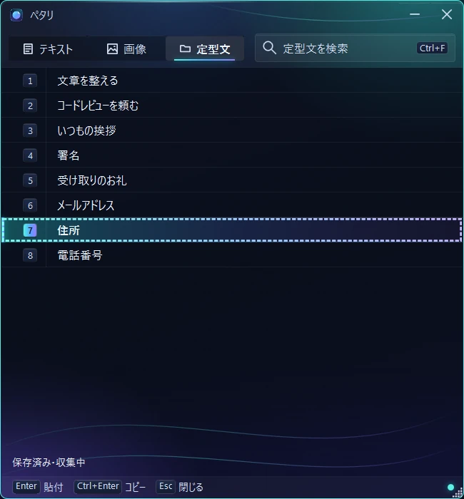
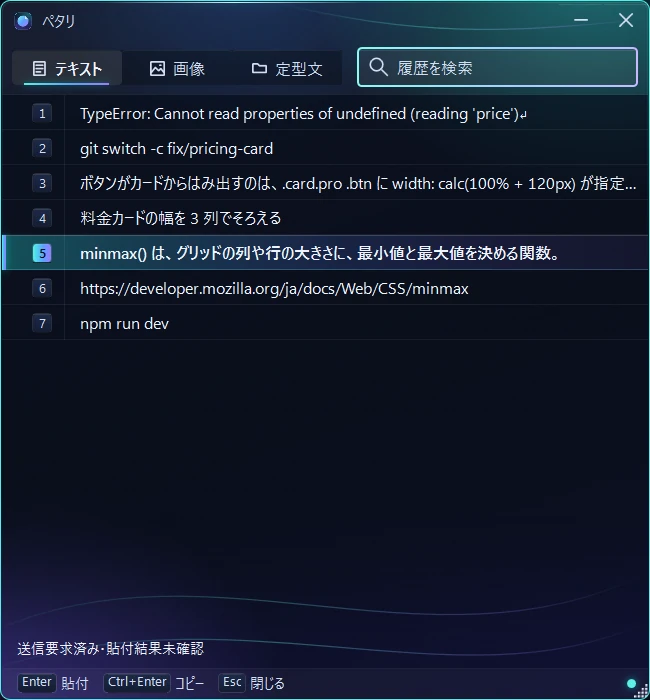
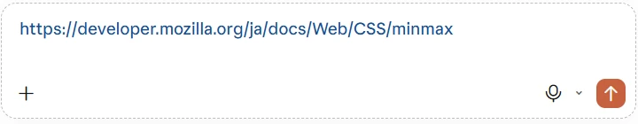
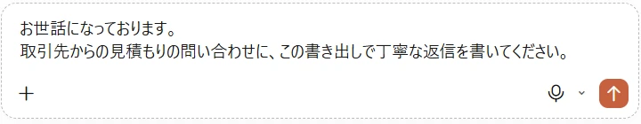

コピペの快適さを徹底的に追求した Windows 11 のクリップボード履歴アプリ
コピーした文も
いつもの定型文も
Ctrl を 2 回で呼び出し
選んで Enter で、
Petari は Windows 11 用です。スマホでご覧の方は、パソコンでこのページを開いてダウンロードしてください。

コピーの履歴を
あとから選んで使う
既定の保存件数
別の文をコピーしたあとも 履歴から選び直せる
調べものの途中で次々コピーして、使うときに選ぶ。いくつか選べば、順番にまとめて貼り付け。


スクショも
画像のまま貼り付け
文章をコピーしたあとでも、さっき撮ったスクショを画像の履歴から選べます。PC を再起動しても消えません。
住所も挨拶も署名も
定型文から
その場でペースト
メールアドレス、住所、電話番号、いつもの挨拶や署名。毎日のように打つ文を一度登録すれば、Ctrl を 2 回押して選ぶだけ。登録したとおりの文字がそのまま入ります。
AI へのいつもの指示も、フォルダに分けて同じように。履歴から右クリックで定型文に登録。

Petari には
通信の機能がありません
- PC の中だけ
- 履歴は、あなたの PC の中に暗号化して保存されます。
- 登録なし
- アカウントもログインもありません。
AI などに貼り付けたあとの扱いは、貼り付け先のサービスの決まりによります。

ダウンロードと入れ方
- 配布ページから ZIP を保存し、右クリックして「すべて展開」を選びます。
- 展開したフォルダの install.ps1 を右クリックし、「PowerShell で実行」を選びます。
- スタートメニューに Petari が追加されます。Ctrl を 2 回押すと開きます。
初めて起動するとき
- 確認画面が出たとき
- 「Windows によって PC が保護されました」と表示されたら
- Petari にはまだコード署名がないため、この画面が出ることがあります。「詳細情報」を押し、「実行」を選ぶと起動します。
- 起動できない PC
- スマート アプリ コントロールがオンの PC では
- 起動できません。
.NET などを別に入れる必要はありません
v0.1.1（2026-11-11 公開）・ZIP 約 72 MB
改ざん確認用の SHA256 は配布ページに記載
よくある質問
本当に無料ですか？
無料です。登録やログインもありません。
どのパソコンで使えますか？
Windows 11（64bit）で使えます。Mac やスマートフォンの版はありません。
コピーした内容が外部に送られることはありますか？
ありません。Petari には通信の機能がなく、履歴は PC の中に暗号化して保存されます。AI などに貼り付けたあとの扱いは、貼り付け先のサービスの決まりによります。
Windows 標準のクリップボード履歴（Win+V）とは何が違いますか？
Windows 標準の履歴は最大 25 件で、再起動すると固定した項目以外は消えます。Petari は既定でテキスト 2,000 件・画像 100 件を残し、再起動しても消えません。よく使う文を定型文としてフォルダに分けておき、Ctrl 2 回で呼び出せる点も違います。
定型文を別のパソコンに移すことはできますか？
定型文は CSV で書き出し・取り込みができます。
起動できないときはどうすればよいですか？
スマート アプリ コントロールがオンの PC では起動できません。初回に確認画面が出た場合は、上の「初めて起動するとき」をご覧ください。
アンインストールするにはどうすればよいですか？
アプリのフォルダにある uninstall.ps1 を右クリックし、「PowerShell で実行」を選びます。保存した履歴を残すか、一緒に消すかを選べます。
さっきのコピーも
いつもの住所も
Ctrl を 2 回で呼び出し
Petari は Windows 11 用です。スマホでご覧の方は、パソコンでこのページを開いてダウンロードしてください。